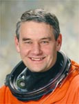

Lyndon B. Johnson Space Center
Houston, Texas 77058
|
National Aeronautics and Space Administration Lyndon B. Johnson Space Center Houston, Texas 77058 |
 |
Biographical Data |
||
VALERY GRIGORIEVICH KORZUN (COLONEL, RUSSIAN AIR FORCE)
COSMONAUT OF YU.A. GAGARIN COSMONAUT TRAINING CENTER
PERSONAL DATA: Born March 5, 1953, in Krasny Sulin. Korzun and his wife Elana have one son, Nikita. His father is Korzun Grigori Andreevich, and his mother, Korzun Maria Arsentievna.
EDUCATION: 1974 graduate of the Kachin Military Aviation College; Commander Department of the Gagarin Air Force Academy, 1987.
SPECIAL HONORS: Awarded six Air Force Medals.
EXPERIENCE: After graduation from the Military College in 1974, he served as pilot, senior pilot, flight section leader, and ultimately Commander of a Russian Air Force squadron. In 1987, after a successful tour as Commander of the Gagarin Military Air-Force Academy, he was selected as a cosmonaut for training at the Gagarin Cosmonaut Training Center.
In December 1987 he began Cosmonaut training and was certified as a Test-Cosmonaut in June 1989.
From September 1989 through September 1992, he trained for space flight as part of the test-cosmonauts group and fom October 1992 to March 1994 he underwent extensive training as Commander of theSoyuz TM rescue spacecraft. He also trained as a group member for flight onboard the orbital complex "MIR" from March 1994 to June 1995.
Korzun also served as deputy Director of the 27KC crew flight training complex as crew communication supervisor from March 1994 to January 1995.
Korzun is a 1st class military pilot and has logged 1473 hours, primarily in 4 aircraft types. He is also an Instructor of Parachute Training, and has completed 377 parachute jumps.
In August 1996 Korzun completed training as Commander for the MIR-22/ NASA-3 and Cassiopia (sponsored by CNES) programs.
On March 2, 1997 Korzun returned to earth after completing a 197-day flight onboard the MIR space station. The program included joint flights with NASA/MIR 2, 3 and 4 astronauts, as well as astronauts from France and Germany. During the mission, Korzun performed 2 space walks totaling 12 hours and 33 minutes.
The Expedition-Five crew launched on June 5, 2002 aboard STS-111a nd docked with the International Space Station on June 7, 2002. Korzun performed two EVAs during his 6-month stay aboard the Space Station. He and Whitson installed six debris panels onto the Zvezda Service Module. They removed the panels from their temporary location on the stations pressurized Mating Adapter 1 prior to attachment to Zvesda. The panels are designed to shield Zvezda from potential space debris impacts. On his second EVA he and Treschev installed a frame on the outside of the Zarya Module to house components for future spacewalk assembly tasks. They installed new material samples on a pair of Japanese Space Agency materials exposure experiments housed on the outside of Zvezda. They installed devices on Zvezda that will simplify the routing of tethers during future assembly spacewalks. They also improved future station amateur radio operations by adding two ham radio antennas on Zvezda. The Expedition-Five crew (one American Astronaut and two Russian Cosmonauts) returned to Earth on December 7, 2002 aboard STS-113. Completing his second flight, Korzun logged 184 days, 22 hours and 14 minutes in space, including two EVAs totaling 9 hours and 46 minutes.
DECEMBER 2002